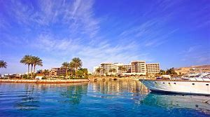
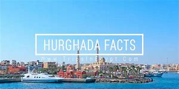
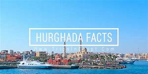

The village, which later evolved into what is now the city of Hurghada, was settled in 1905. It acquired its name from a plant which has grown naturally since ancient times. By then it was only a fishing village. Oil was discovered in the area in 1913, but actual production and export only began in 1921 under British oil magnates. During the reign of King Farouk a recreational center was built in the city, but after President Nasser's nationalization of Egypt's industries it was turned over to the armed forces.The city was founded in the early 20th century, and until recently it was a small fishing village. But since the 1980s, it has been continually enlarged by Egyptian and foreign investors to become the leading coastal resort on the Red Sea. Holiday resorts and hotels provide aquatic sport facilities for windsurfers, kitesurfers, yachtsmen, scuba divers and snorkelers. Hurghada is known for its watersports activities, nightlife and warm weather. Daily temperature hovers round 30 °C (86 °F) most of the year, during July and August temperatures reach over 40 °C (104 °F). Many Europeans head to Hurghada for their regular Holidays, especially during the Winter season and spend their Christmas and New Year holidays in the city. Tourism from Russia dropped drastically after the Metrojet Flight 9268 plane crash in November 2015.

 
